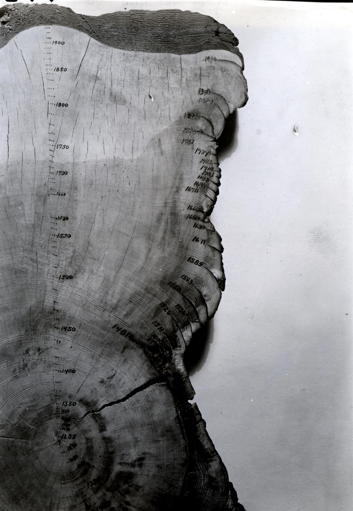

MCP Server 目录
我一条条记下来的 MCP Server：它说自己支持哪些 Transport、用什么语言写、在哪里能找到。
「元数据已核对」只表示我核对过名称、链接、License 这些信息，不代表安全认证、跑过测试或服务可用。这里也不运行、不代理任何 Server。

目录没有取回来
可能是网络中断，或者服务暂时不可用。筛选条件还在，重试一次就好。
站点刚长出新的一圈
目录随新版本更新了。为了不把两个版本的条目混在一起，旧结果已经清掉，刷新一下就好。
MCP Server 条目
没有符合条件的结果。换一个分类、Transport 或语言，或者把筛选全部清掉。

核对了什么
我核对的是写在纸面上的东西：名称、简介、仓库和文档链接、License、声明的 Transport 和实现语言，最后记下核对的日期。
我不审计代码，不跑测试，也不保证它今天还能连上。用之前，请自己读一读它的仓库。
还没核对过的条目会写「元数据尚未核对」，照样列出来，不藏起来。